Comme ta photo
à gauche ta photo, à droite notre rendu

Ta photo
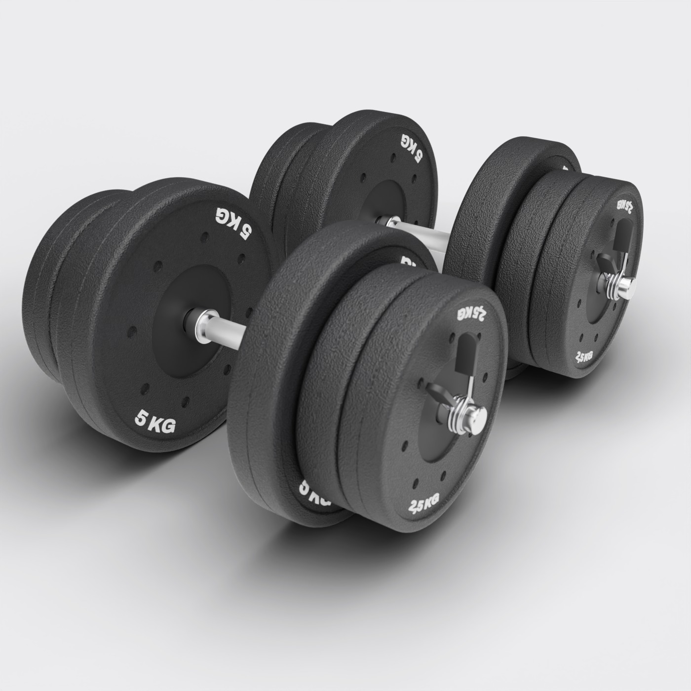
Notre rendu · même montage, tout acier, marquage blanc
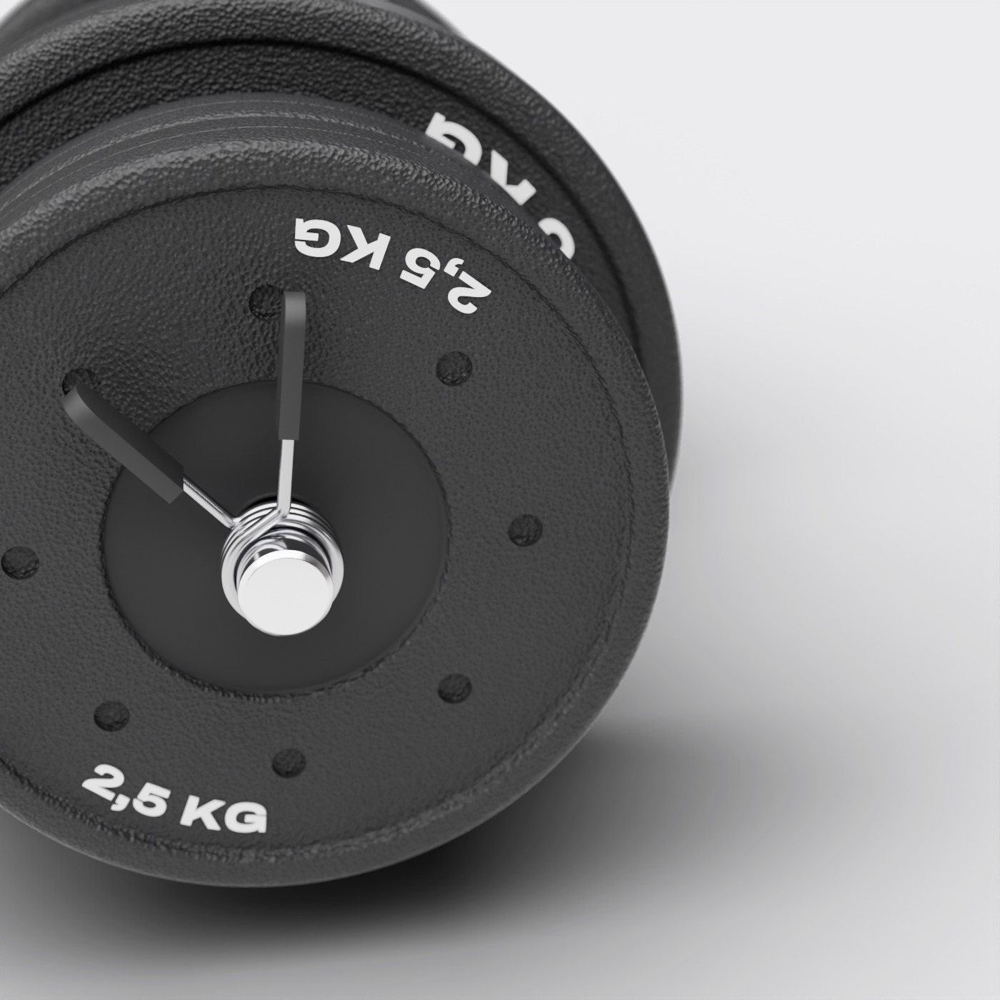
Le bout de l'haltère : le disque, la pince, l'acier nu
Le bout de la poignée
plus d'embout noir : l'acier nu, trois façons de le finir
1 · Chanfrein · un biseau de 1,5 mm, bout plat (comme les manchons de la barre)
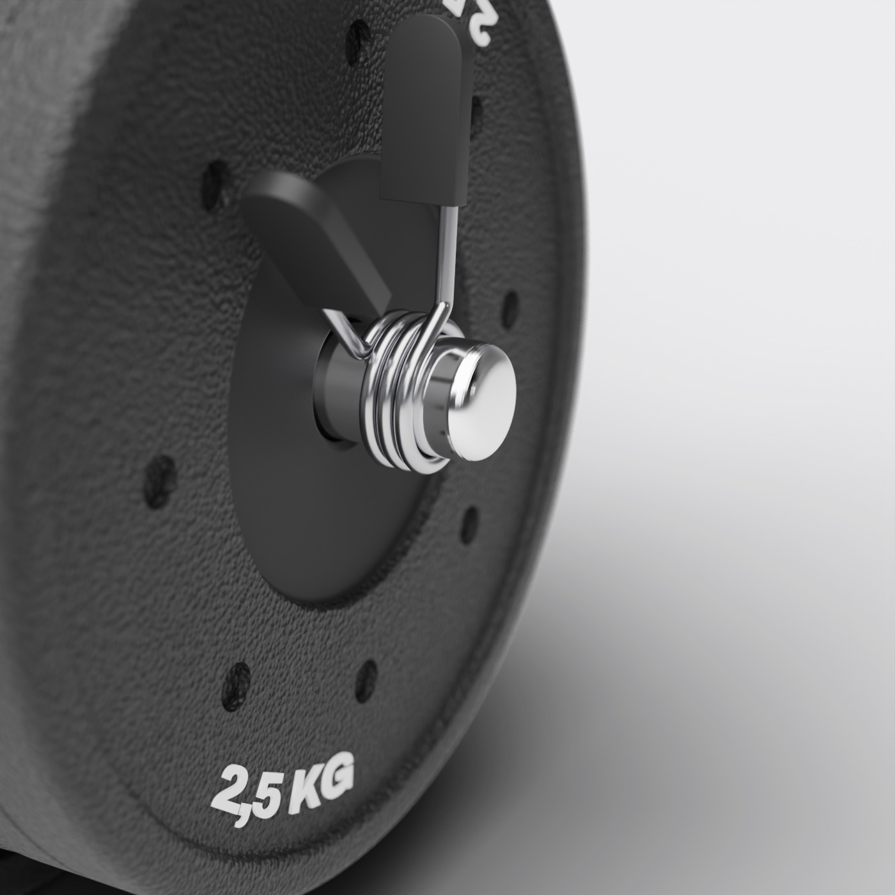
2 · Arrondi · un arrondi de 5,5 mm, bout légèrement bombé
3 · Creux · le chanfrein et un creux dans la face (le bout de la barre olympique, sans son embout)
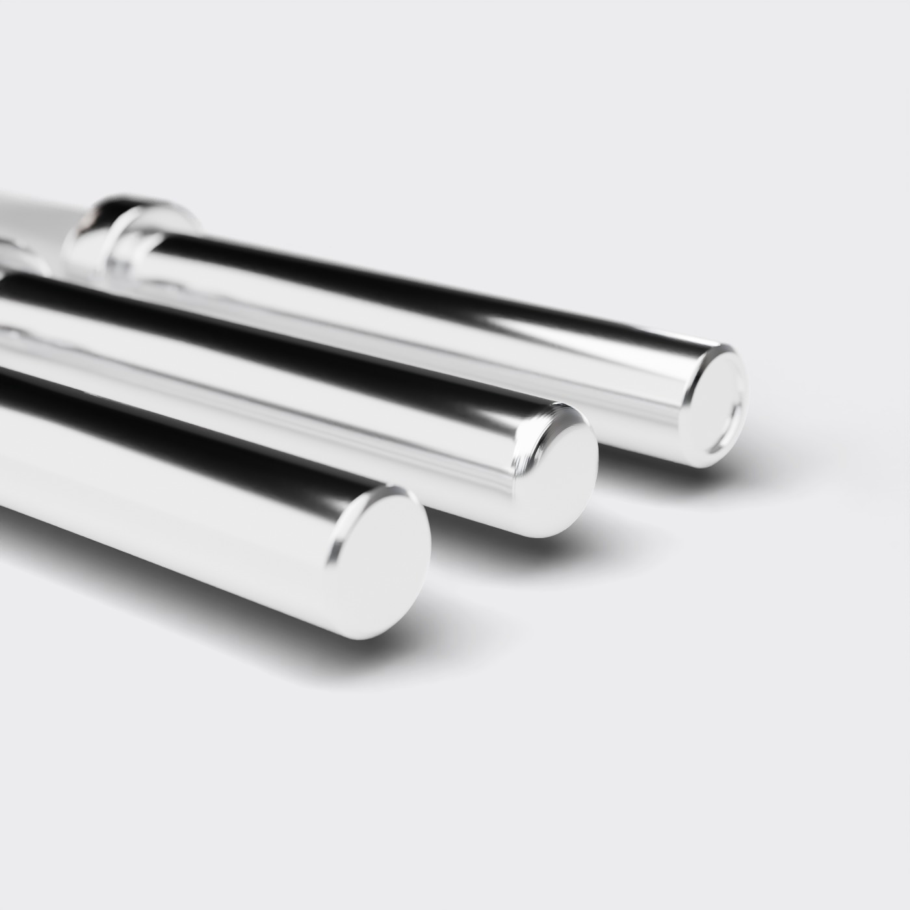
De devant à derrière : 1 chanfrein, 2 arrondi, 3 creux
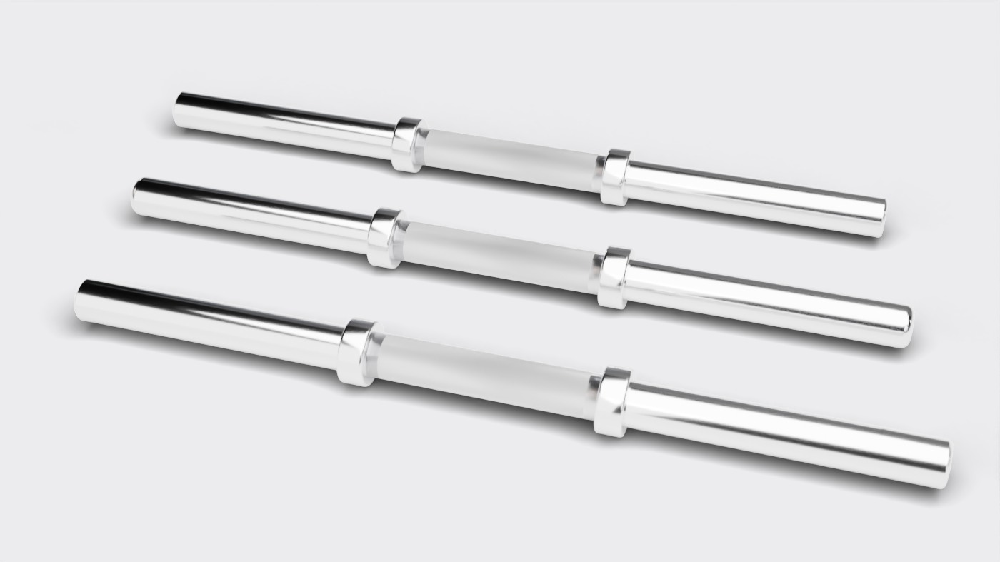
Les trois poignées entières, dans le même ordre
L'haltère
tout acier, disques sablés, marquage blanc, notre pince en 25 mm
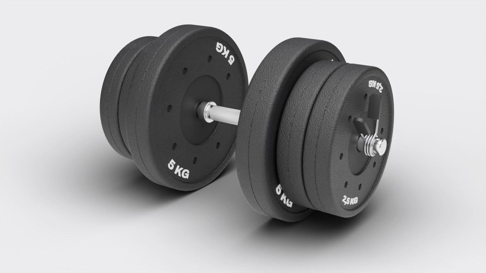
Poignée tout acier, disques sablés, marquage blanc (bout 1, chanfrein)
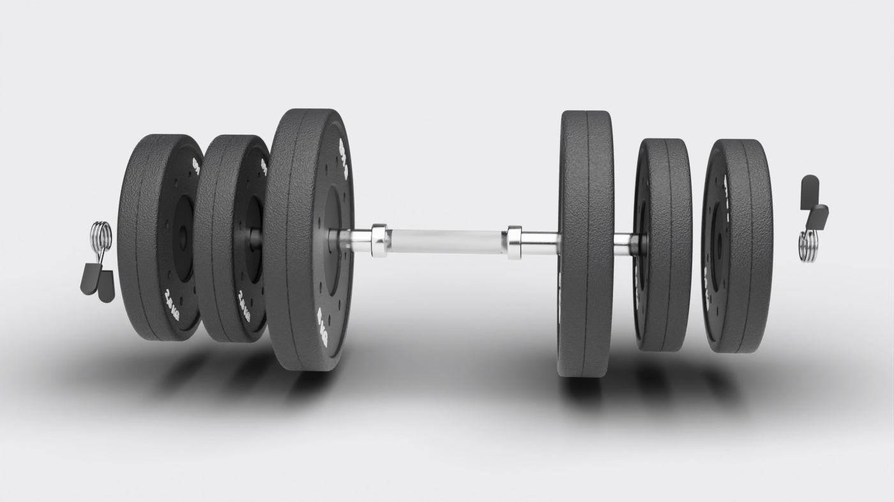
Éclaté : la poignée, trois disques par côté, une pince à chaque bout
Les disques
les trois poids et le marquage blanc
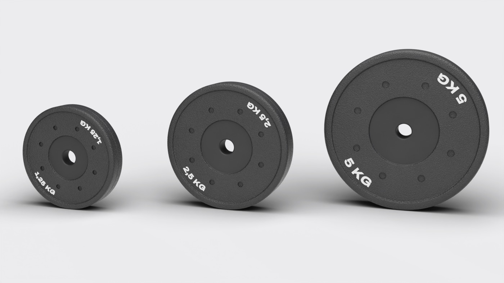
1,25 kg · 2,5 kg · 5 kg
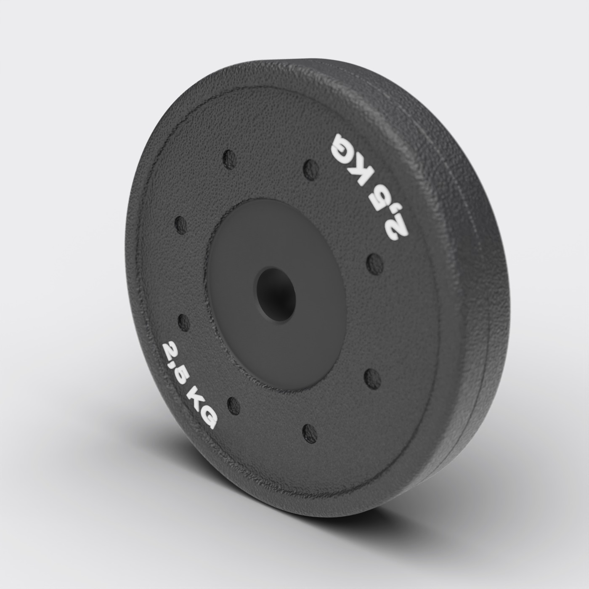
Sablé, marquage blanc
Les coloris
les huit couleurs de la charte
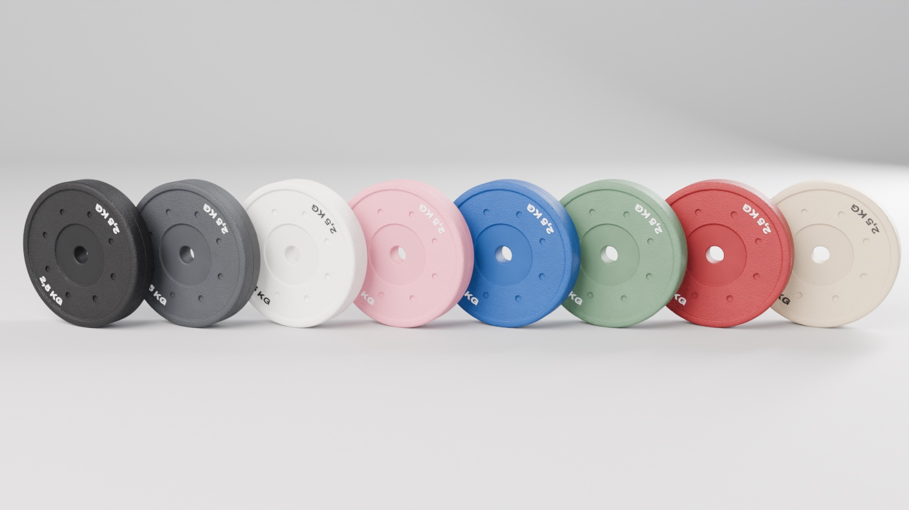
Les huit coloris : marquage blanc, ou anthracite sur les teintes claires
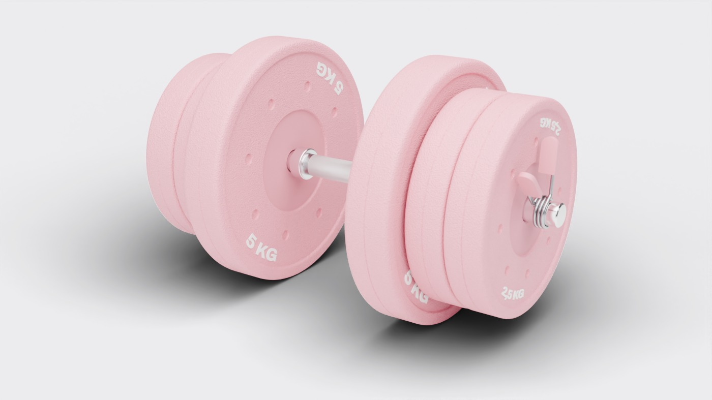
Rose : les disques et les gaines de la pince
Bleu